全文翻译
摘要
在过去几年里，扩散模型（DMs）在生成式建模任务中取得了巨大成功，能够生成高保真样本。然而，DM的一个主要局限性是其采样过程极为缓慢，通常需要对学习到的扩散过程进行数百到数千次时间离散化步骤才能达到所需的精度。我们的目标是为DM开发一种快速采样方法，在减少步骤的同时保持高样本质量。为此，我们系统地分析了DM中的采样过程，确定了影响样本质量的关键因素，其中离散化方法最为关键。通过仔细研究学习到的扩散过程，我们提出了扩散指数积分采样器（DEIS）。它基于为离散化常微分方程（ODE）设计的指数积分器，并利用学习到的扩散过程的半线性结构来减少离散化误差。所提出的方法可以应用于任何DM，并且能够在仅10步内生成高保真样本。此外，通过直接使用预训练的DM，在得分函数评估次数（NFE）有限的情况下，我们实现了最先进的采样性能，例如在CIFAR10数据集上，10次NFE时的FID为4.17，20次NFE时的FID为2.86。项目页面和代码：https://qsh-zh.github.io/deis 。
| 图1：使用各种扩散模型生成的图像。潜在扩散模型（Rombach等人，2021年）（左图），256×256分辨率，带有文字“一件印有‘世界和平’字样的衬衫”（15次得分函数评估）。VE扩散模型（Song等人，2020b）（中图），256×256分辨率的FFHQ图像（12次得分函数评估）。VP扩散模型（Ho等人，2020）（右图），CIFAR10数据集图像（7次得分函数评估）和CELEBA数据集图像（5次得分函数评估）。 |
1 引言
扩散模型（DM）（Ho等人，2020）是一种近期发展起来的生成式建模方法，它基于对给定的简单扩散过程进行逆向操作的基本思想。为此，需要学习一个随时间变化的得分函数，因此DM也被称为基于得分的模型（Song等人，2020b）。与其他生成式模型（如生成对抗网络GANs）相比，DM除了具有很强的可扩展性外，还具有训练稳定、对超参数不太敏感的优势（Creswell等人，2018；Kingma和Welling，2019）。近年来，DM在各种任务中取得了令人瞩目的成绩，包括无条件图像生成（Ho等人，2020；Song等人，2020b；Rombach等人，2021；Dhariwal和Nichol，2021）、文本条件图像生成（Nichol等人，2021；Ramesh等人，2022）、文本生成（Hoogeboom等人，2021；Austin等人，2021）、3D点云生成（Lyu等人，2021）、逆问题（Kawar等人，2021；Song等人，2021b）等。
然而，DM的卓越性能是以采样速度慢为代价的；与GANs相比，生成高质量样本需要更长的时间。例如，去噪扩散概率模型（DDPM）（Ho等人，2020）生成一个样本需要1000步，且每一步都需要对学习到的神经网络进行一次评估；这比GANs（Goodfellow等人，2014；Karras等人，2019）要慢得多。因此，有多项研究旨在提高DM的采样速度（更多相关工作见附录A）。一类方法是修改/优化正向噪声过程，使反向去噪过程更高效（Nichol和Dhariwal，2021；Song等人，2020b；Watson等人，2021；Bao等人，2022）。一个重要且有效的例子是去噪扩散隐式模型（DDIM）（Song等人，2020a），它使用非马尔可夫噪声过程。另一类方法是加速与DM相关的随机微分方程（SDE）或常微分方程（ODE）的数值求解器（Jolicoeur-Martineau等人，2021；Song等人，2020b；Tachibana等人，2021）。在（Song等人，2020b）中，使用黑盒ODE求解器来求解一个称为概率流（PF）的边际等效ODE，以实现快速采样。在（Liu等人，2022）中，作者将DDIM与高阶方法相结合来求解这个ODE，实现了进一步加速。需要注意的是，确定性的DDIM也可以看作是PF的时间离散化，因为在连续极限下它与PF是匹配的（Song等人，2020a；Liu等人，2022）。然而，目前尚不清楚为什么DDIM比诸如欧拉法等通用方法表现更好。
这项工作的目标是为DM中学习到的反向扩散过程建立一个有原则的离散化方案，以实现快速采样。由于在对DM进行采样时，最耗时的部分是对参数化反向扩散的神经网络的评估，因此我们寻求一种需要较少网络函数评估（NFE）的离散化方法。我们从与DM相关的一类边际等效SDE/ODE出发，研究数值误差来源，包括拟合误差和离散化误差。我们发现，即使使用相同的训练模型，不同的离散化方案在离散化误差方面也可能有显著差异。然后，我们进行了一系列实验，系统地研究了不同因素对离散化误差的影响。我们发现，利用反向扩散半线性结构的指数积分器（EI）（Hochbruck和Ostermann，2010）具有最小的误差。为了进一步减少离散化误差，我们建议使用高阶多项式来近似ODE中的非线性项，或者对变换后的ODE采用龙格 - 库塔方法。由此产生的算法，即扩散指数积分采样器（DEIS），在有限的NFE下实现了最佳的采样质量。
我们的贡献总结如下：1）我们研究了一类用于快速采样的边际等效SDE/ODE，并对其数值求解器进行了系统的误差分析。2）我们提出了DEIS，这是一种高效的采样器，可以应用于任何DM，在有限的NFE下实现卓越的采样质量。DEIS还可以加速数据对数似然评估。3）我们证明了确定性DDIM是DEIS的一个特殊情况，从离散化的角度解释了DDIM的有效性。4）我们进行了全面的实验来验证DEIS的有效性。例如，使用预训练模型（Song等人，2020b），DEIS在CIFAR10数据集上，10次NFE时能够达到4.17的FID，20次NFE时能够达到2.86的FID。
2扩散模型背景知识
扩散模型由一个固定的正向扩散（加噪）过程和一个经过学习的反向扩散（去噪）过程构成。正向扩散过程为数据添加噪声，而反向扩散过程则逐步去除所添加的噪声。反向扩散经过训练，使其在概率分布上与正向扩散相匹配。当达到这种匹配时，理论上就能够通过模拟反向扩散从数据分布中生成完美的样本。
- 正向加噪扩散：扩散模型对$D$维数据的正向扩散是一种线性扩散，由随机微分方程（SDE）描述（Särkkä和Solin，2019）：其中，$F_t \in \mathbb{R}^{D×D}$表示线性漂移系数，$G_t \in \mathbb{R}^{D×D}$表示扩散系数，$w$是标准维纳过程。扩散方程（1）以训练数据为起始点，在固定的时间窗口$[0, T]$内进行模拟。用$p_t(x_t)$表示$x_t$的边际分布，$p_{0t}(x_t | x_0)$表示从$x_0$到$x_t$的条件分布，那么$p_0(x_0)$代表训练数据的潜在分布。模拟的轨迹记为$\{x_t\}_{0\leq t\leq T}$。选择参数$F_t$和$G_t$，使得条件边际分布$p_{0t}(x_t | x_0)$是一个简单的高斯分布，记为$N(\mu_tx_0, \sum_t)$，并且分布$\pi(x_T) := p_T(x_T)$易于采样。扩散模型中两种常见的SDE（Song等人，2020b）总结在表1中。此处我们使用矩阵符号表示$F_t$和$G_t$，以凸显我们方法的通用性。我们的方法适用于任何扩散模型，包括模糊扩散模型（BDM）（Hoogeboom和Salimans，2022；Rissanen等人，2022）以及临界阻尼朗之万扩散（CLD）（Dockhorn等人，2021），在这些模型中，这些系数实际上是非对角矩阵。
| 表1：两种常见的随机微分方程，即方差保持随机微分方程（VPSDE）和方差爆炸随机微分方程（VESDE）。参数$\alpha_{t}$ 是递减的，其中$\alpha_{0} \approx1$ ，$\alpha_{T} \approx0$ ，而$\sigma_{t}$ 是递增的。 |
- 反向去噪扩散：在一些温和的假设下（Anderson，1982；Song等人，2020b），正向扩散方程（1）与一个反向时间的扩散过程相关：其中，$w$表示反向时间方向的标准维纳过程。方程（2）的轨迹分布，其终端分布为$x_T \sim \pi$，与方程（1）初始分布为$x_0 \sim p_0$的轨迹分布一致，也就是说，方程（2）在概率法则上与方程（1）相匹配。因此，理论上我们可以通过模拟反向扩散方程（2）从数据分布$p_0$中生成新的样本。然而，为了解方程（2），我们需要评估得分函数$\nabla \log p_t(x)$，但这个函数无法直接获取。
- 训练：扩散模型的基本思路是使用一个随时间变化的网络$s_θ(x, t)$，即得分网络，来近似得分$\nabla \log p_t(x)$。这通过得分匹配技术（Hyvärinen，2005；Vincent，2011）来实现，其中得分网络$s_θ$通过最小化去噪得分匹配损失进行训练：这里，由于$p_{0t}(x_t | x_0)$是一个简单的高斯分布，所以$\nabla \log p_{0t}(x_t | x_0)$有一个封闭形式的表达式，$\Lambda_t$表示一个随时间变化的权重。这个损失可以通过蒙特卡罗方法使用经验样本进行评估，因此可以使用标准的随机优化算法进行训练。关于$\Lambda_t$的选择和训练技术的更多细节，读者可参考（Ho等人，2020；Song等人，2020b）。
3 基于学习得分模型的快速采样
一旦训练好得分网络$s_{\theta}(x, t) \approx \nabla \log p_t(x)$，就可以通过求解反向随机微分方程（SDE）（公式2）来生成新样本，其中$\log p_t(x)$用$s_{\theta}(x, t)$代替。实际上，可以使用的扩散过程有无数种。在这项工作中，我们考虑一类由$\lambda \geq 0$参数化的SDE：
这里我们用$\hat{x}$来区分与学习得分相关的SDE的解和公式（1）、（2）中的真实值$x$。当$\lambda = 0$时，公式（4）简化为一个常微分方程（ODE），称为概率流ODE（Song等人，2020b）。带有近似得分的反向时间扩散公式（2）是公式（4）在$\lambda = 1$时的特殊情况。用$\{\hat{x}_t^{\ast}\}_{0 \leq t \leq T}$表示由公式（4）生成的轨迹，用$\hat{p}_t^{\ast}$表示其边际分布。以下命题（Zhang和Chen，2021；证明见附录D）成立。
命题1：当对于所有的$x$和$t$，$s_{\theta}(x, t) = \nabla \log p_t(x)$，且 $\hat{p}_{T}^{\ast} = \pi $ 时，公式（4）的边际分布$\hat{p}_{t}^{\ast}$与正向扩散公式（1）的$p_t$在所有$0 \leq t \leq T$上都匹配。
上述结果证明了使用公式（4）生成样本的合理性。为了生成一个新样本，可以从$\pi$中采样$\hat{x}_T^{\ast}$，然后求解公式（4）得到样本$\hat{x}_0^{\ast}$。然而，在实际中，公式（4）的精确解是无法得到的，需要对时间进行离散化来获得近似解。 用$\hat{x}_t$表示近似解，用$\hat{p}_t$表示其边际分布，那么生成模型的误差，即$p_0(x)$和$\hat{p}_0(x)$之间的差异，是由两个误差源造成的：拟合误差和离散化误差。拟合误差是由于学习到的得分网络$s_{\theta}$与真实得分$\nabla \log p_t(x)$之间的不匹配。离散化误差包括在数值求解公式（4）时由离散化引入的所有额外误差。为了减少离散化误差，需要使用更小的步长，从而增加步数，这使得采样效率降低。
这项工作的目标是研究这两个误差源，并从公式（4）中开发一种更高效、误差更小的采样方案。在本节中，我们主要关注$\lambda = 0$的ODE方法。除非另有说明，本节中的所有实验都是基于CIFAR10数据集上的方差保持SDE（VPSDE）进行的。关于$\lambda > 0$的SDE方法的讨论推迟到附录C。
3.1 我们能学习到全局精确的得分吗？
由于扩散模型在生成高保真样本方面展示了令人印象深刻的实验结果，人们可能会认为学习到的得分网络能够很好地拟合数据分布的得分，即对于几乎所有的$x \in \mathbb{R}^D$和$t \in [0, T]$，都有$s_{\theta}(x, t) \approx \nabla \log p_t(x)$。然而，事实并非如此。在某些$x$和$t$上，拟合误差可能会非常大，下面的一个简单例子可以说明这一点。实际上，对于大多数的$x$和$t$，学习到的得分模型并不准确。
考虑一个在一维空间（即$D = 1$）上的生成建模任务。数据分布是一个方差非常小的高斯分布。我们在图2中绘制了通过最小化公式（3）训练得到的得分模型与真实得分之间的拟合误差。从图中可以看出，得分模型在$p_t(x)$较大的区域表现良好，但在$p_t(x)$较小的区域存在较大误差。这一现象可以通过研究训练损失公式（3）来解释。特别地，公式（3）的训练数据是从$p_t(x)$中采样得到的。在$p_t(x)$值较低的区域，由于缺乏训练数据，学习到的得分网络预计不会表现得很好。在具有高维数据的实际场景中，这种现象更加明显。因为实际数据通常在$\mathbb{R}^D$中稀疏分布，$p_t(x)$值较高的区域非常小；人们认为像图像这样的实际数据集中在一个内在的低维流形上（Deng等人，2009；Pless和Souvenir，2009；Liu等人，2022）。
| 图2：一个简单示例中的拟合误差。颜色较浅的区域在左图中代表概率较高的区域，在右图中代表拟合误差较大的区域。 |
因此，为了确保$\hat{x}_0$接近$x_0$，我们需要确保$\hat{x}_t$在所有的$t$时刻都保持在$p_t(x)$较高的区域。这使得从公式（4）进行快速采样成为一项具有挑战性的任务，因为这阻止我们采用较大的步长，否则可能会使解进入学习到的得分网络拟合误差较大的区域。一个好的公式（4）离散化方案应该能够在采样过程中帮助减少得分网络拟合误差的影响。
3.2 离散化误差
接下来我们研究求解概率流ODE（$\lambda = 0$）时的离散化误差：
该ODE的精确解为：
其中，$\Psi(t, s)$满足$\frac{\partial}{\partial t}\Psi(t, s) = F_t\Psi(t, s)$，$\Psi(s, s) = I$，它是与$F_{\tau}$相关的从时间$s$到$t$的转移矩阵。公式（5）是一个半线性刚性ODE（Hochbruck和Ostermann，2010），由一个线性项$F_t\hat{x}$和一个非线性项$s_{\theta}(\hat{x}, t)$组成。对于公式（5），有许多不同的数值求解器，它们与不同的离散化方案相关，用于近似公式（6）（Griffiths和Higham，2010）。当离散化步长趋于零时，所有这些方法得到的解都收敛到公式（5）的解。然而，当步长较大时，这些方法的性能可能会有很大差异。另一方面，为了用公式（5）实现快速采样，我们需要用较少的离散化步骤来近似求解它，因此需要较大的步长。这促使我们开发一种最适合公式（5）的高效离散化方案。在本节的其余部分，我们将通过理论分析和精心设计的实验系统地研究求解公式（5）时的离散化误差。基于这些结果，我们为公式（5）开发了一种需要较少NFE的高效算法。
- 要素1：指数积分器优于欧拉法：欧拉法是求解ODE最基本的显式数值方法，广泛应用于数值计算软件中（Virtanen等人，2020）。当应用于公式（5）时，欧拉法的表达式为：这一方法在许多现有的扩散模型研究中被使用（Song等人，2020b；Dockhorn等人，2021）。然而，这种方法精度较低，并且当步长不够小时，有时会不稳定。为了提高精度，我们建议使用指数积分器（EI），这是一种利用公式（5）半线性结构的方法。当应用于公式（5）时，EI的表达式为：如果非线性项$s_{\theta}(\hat{x}_t, t)$在解的过程中变化不大，那么这种方法是有效的。实际上，对于任何给定的$\Delta t$，如果$s_{\theta}(\hat{x}_t, t)$在时间区间$[t - \Delta t, t]$内是常数，那么公式（8）可以精确求解公式（5）。为了比较EI（公式8）和欧拉法（公式7），我们在图3a中绘制了在不同步数$N$下，真实值$\hat{x}_0^*$与通过这两种方法得到的数值解$\hat{x}_0$之间的平均像素差异$\Delta_p$。令人惊讶的是，EI方法的表现比欧拉法更差。
这一观察结果表明，还有其他主要因素导致了误差$\Delta_p$。特别是，EI方法所假设的非线性项$s_{\theta}(\hat{x}_t, t)$在解的过程中变化不大这一条件并不成立。为了说明这一点，我们在图3b中绘制了沿着公式（5）的精确解$\{\hat{x}_t^*\}$的得分近似误差$\Delta_s(\tau)=\left|s_{\theta}(x_{\tau}, \tau) - s_{\theta}(x_{t}, t)\right|_2$，$\tau \in [t - \Delta t, t]$ 。可以看出，随着$t$接近0，近似误差迅速增长。这并不奇怪，因为实际数据分布的得分$\nabla \log p_t(x)$在$t \to 0$时应该变化很快（Dockhorn等人，2021）。
- 要素2：使用$\epsilon_{\theta}(x, t)$而非$s_{\theta}(x, t)$：得分$\nabla \log p_t(x)$快速变化带来的问题不仅存在于采样过程中，也出现在扩散模型的训练过程中。为了解决这些问题，人们使用了得分网络的不同参数化方式。具体来说，研究发现参数化（Ho等人，2020）$\nabla \log p_t(x) \approx -L_t^{-T}\epsilon_{\theta}(x, t)$（其中$L_t$可以是任何满足$L_tL_t^T = \sum_t$的矩阵）能够显著提高精度。这种参数化的原理是基于对训练损失公式（3）的重新表述（Ho等人，2020）：其中$\bar{\Lambda}_{t}=L_{t}^{-1}\Lambda_{t}L_{t}^{-T}$。网络$\epsilon_{\theta}$试图跟踪从标准高斯分布中采样得到的$\epsilon$，因此其幅度较小。相比之下，参数化$s_{\theta}=-L_t^{-T}\epsilon_{\theta}$在$t$接近0时，随着$L_t \to 0$，其值可能会很大。因此，用神经网络近似$\epsilon_{\theta}$比近似$s_{\theta}$更好。我们采用这种参数化方式，并将公式（5）改写为：
将EI应用于公式（10）得到：
与公式（8）相比，公式（11）在时间区间$\tau \in [t - \Delta t, t]$内使用$-L_{\tau}^{-T}\epsilon_{\theta}(x_{t}, t)$而不是$s_{\theta}(x_{t}, t)=-L_{t}^{-T}\epsilon_{\theta}(x_{t}, t)$来近似得分$s_{\theta}(x_{\tau}, \tau)$。事实证明，从$L_t^{-T}$到$L_{\tau}^{-T}$的这种修改至关重要；系数$L_{\tau}^{-T}$随时间变化很快。图3d验证了这一点，我们在图中绘制了使用参数化$\epsilon_{\theta}$时的得分近似误差$\Delta_s$，可以看到与图3b相比，误差$\Delta_s$大大降低。通过这种修改，EI方法明显优于欧拉法，如图3c所示。接下来，我们基于公式（11）为扩散模型开发了几种快速采样算法，统称为扩散指数积分采样器（DEIS）。
| 图3：图3a展示了使用欧拉法和指数积分法（EI）得到的真实值$\hat{x}_{0}^{\ast}$与数值解$\hat{x}_{0}$之间的平均像素差异$\Delta_{p}$。图3b描绘了沿真实解的近似误差$\Delta_{s}$。图3d表明，如果使用参数化$\epsilon_{\theta}(x, t)$而非$s_{\theta}(x, t)$，$\Delta_{s}$可以显著降低。这种参数化使得EI方法在图3c中优于欧拉法。 |
有趣的是，当正向扩散公式（1）是VPSDE时，基于EI的离散化公式（11）与流行的确定性DDIM是一致的，总结如下（证明见附录E）。
命题2：当正向扩散公式（1）设置为VPSDE（$F_t$，$G_t$在表1中指定）时，EI离散化公式（11）变为：
这与确定性DDIM采样算法一致。
我们的结果从数值离散化的角度为VPSDE中DDIM的有效性提供了另一种解释。与DDIM不同，我们的公式（11）可以应用于任何扩散SDE，以提高离散化的效率和准确性。
在离散化公式（11）中，我们用$\epsilon_{\theta}(\hat{x}_t, t)$来近似所有$\tau \in [t - \Delta t, t]$的$\epsilon_{\theta}(\hat{x}_{\tau}, \tau)$，这是零阶近似。比较公式（11）和公式（6）可以发现，这种近似误差在很大程度上决定了离散化的精度。一个自然的问题是，是否可以使用对$\epsilon_{\theta}(\hat{x}_{\tau}, \tau)$更好的近似来进一步提高精度？下面我们通过一种改进的算法肯定地回答了这个问题。
- 要素3：$\epsilon_{\theta}$的多项式外推：在介绍我们的算法之前，我们研究了$\epsilon_{\theta}(x_t, t)$沿着从$t = T$到$t = 0$的真实解$\{\hat{x}_t\}$是如何演化的。我们在图4a中绘制了$\epsilon_{\theta}(x_t, t)$的2 - 范数的相对变化。结果显示，在大多数时间点，相对变化都很小。这促使我们使用直到时间$t$的$\epsilon_{\theta}$的先前（反向）评估值来外推$\tau \in [t - \Delta t, t]$的$\epsilon_{\theta}(x_{\tau}, \tau)$。
受线性多步法中高阶多项式外推的启发，我们在EI方法中使用$\epsilon_{\theta}$的高阶多项式外推。为此，考虑时间离散化$\{t_i\}_{i = 0}^{N}$，其中$t_0 = 0$，$t_N = T$。对于每个$i$，我们根据插值点$(t_{i + j}, \epsilon_{\theta}(\hat{x}_{t_{i + j}}, t_{i + j}))$，$0 \leq j \leq r$拟合一个$r$次多项式$P_r(t)$。这个多项式$P_r(t)$有明确的表达式：
然后，我们在区间$[t_{i - 1}, t_i]$内用$P_r(t)$来近似$\epsilon_{\theta}(x_{\tau}, \tau)$。对于$i > N - r$，我们需要使用较低阶的多项式来近似$\epsilon_{\theta}$。为了展示这种近似的优势，我们在图4b中绘制了沿着真实轨迹$\{\hat{x}_t^*\}$的$\epsilon_{\theta}(x_t, t)$与$P_r(t)$的近似误差$\Delta_{\epsilon}(t)=\left|\epsilon_{\theta}(x_{t}, t) - P_{r}(t)\right|_2$。可以看出，与公式（11）中使用零阶近似（$r = 0$）的情况相比，高阶多项式可以降低近似误差。
正如在公式（11）的EI方法中对公式（6）中的得分采用零阶近似一样，r阶更新步长是通过将公式（13）的多项式近似代入公式（6）得到的。它可以明确地写为：
我们注意到，公式（14）中的更新是$\hat{x}_{t}$和$\epsilon_{\theta}(\hat{x}_{t_{i + j}}, t_{i + j})$的线性组合，其中权重$\Psi(t_{i - 1}, t_{i})$和$C_{ij}$针对给定的正向扩散公式（1）和时间离散化仅计算一次，并且可以在不同批次中重复使用。对于某些扩散公式（1），$\Psi(t_{i - 1}, t_{i})$和$C_{ij}$具有闭式表达式。即使没有解析公式，也可以使用高精度求解器来获得这些系数。在扩散模型（例如，方差保持随机微分方程（VPSDE）和方差爆炸随机微分方程（VESDE））中，公式（15）通常是一维或二维积分，因此很容易进行数值计算。这种方法类似于经典的亚当斯 - 巴什福思方法（Hochbruck和Ostermann，2010），因此我们将其称为tAB - DEIS。这里我们使用“t”来将它与我们在第4节中基于时间缩放常微分方程提出的其他DEIS算法区分开来。
tAB-DEIS算法总结在算法1中。需要注意的是，对于VPSDE而言，确定性DDIM是tAB-DEIS在$r = 0$时的特殊情况。如图4c所示，当采样步数$N$较少时，DEIS中使用的多项式近似能显著提升采样质量。
| 图4：图4a展示了$\epsilon_{\theta}(\hat{x}_{t}^{\ast}, t)$相对于t的相对变化较小，尤其是当$t > 0.15$时。图4b描绘了在$N = 10$时的外推误差。高阶多项式能够有效地降低近似误差。图4c展示了外推的效果。当N较小时，高阶多项式近似能得到更好的样本。 |
4 指数积分器：简化概率流常微分方程
接下来我们从基于常微分方程变换的角度介绍一种不同的DEIS视角。概率常微分方程公式（10）可以转化为一个简单的非刚性常微分方程，然后就可以应用现成的常微分方程求解器有效地求解该方程。为此，我们引入变量$\hat{y}_t := \Psi(t, 0)\hat{x}_t$，并将公式（10）改写为：
需要注意的是，与公式（10）不同，公式（16）不具有半线性结构。因此，我们可以在算法设计中不考虑半线性结构，直接将现成的常微分方程求解器应用于公式（16）。通过考虑$\Psi$、$G_t$、$L_t$的解析形式，公式（16）的这种变换可以进一步优化。这里我们给出针对VPSDE的处理方法；其结果可以扩展到其他（标量）扩散模型，如VESDE。
命题3：对于VPSDE，令$\hat{y}_t=\sqrt{\frac{\alpha_{0}}{\alpha_{t}}}\hat{x}_{t}$，并进行时间缩放$\beta(t)=\sqrt{\alpha_{0}}(\sqrt{\frac{1 - \alpha_{t}}{\alpha_{t}}}-\sqrt{\frac{1 - \alpha_{0}}{\alpha_{0}}})$，公式（10）可以转化为：
变换后，该常微分方程变成了一个黑盒常微分方程，可以由通用的常微分方程求解器高效求解，因为半线性结构带来的刚性被消除了。这就是我们接下来要介绍的DEIS变体的核心思想。
基于变换后的常微分方程公式（17）以及上述讨论，我们提出了DEIS算法的两个变体：应用经典龙格 - 库塔（RK）方法的$\rho$RK - DEIS，以及应用亚当斯 - 巴什福思方法的$\rho$AB - DEIS。需要注意的是，tAB - DEIS和$\rho$AB - DEIS的区别在于，tAB - DEIS在$t$上拟合多项式，而这些多项式在$\rho$上可能不是多项式。得益于简化后的常微分方程，DEIS具有与底层RK或AB求解器相同的收敛阶保证。
5 实验
- 消融研究：如图5所示，第3.2节中引入的要素可以显著提高在CIFAR10数据集上的采样效率。此外，DEIS在性能上大幅超越了标准采样器。
| 图5：消融研究以及与其他采样器的比较。我们注意到，从欧拉法切换到指数积分器会使FID（弗雷歇距离，Frechet Inception Distance）变差，我们在第3节的要素2中对此进行了探究和解释。使用指数积分器（EI）$\epsilon_{\theta}$参数化、多项式外推以及优化时间戳能够显著提升采样质量。与其他采样器相比，基于RK45的ODE采样器（Song等人，2020b）、基于欧拉 - 丸山（EM）的SDE采样器（Song等人，2020b）以及SDE自适应步长求解器（Jolicoeur - Martineau等人，2021），DEIS的收敛速度要快得多。 |
- DEIS变体：我们在表2中列出了使用VPSDE在CIFAR10数据集上对各种DEIS的性能评估结果，包括DDIM、$\rho$RK - DEIS、$\rho$AB - DEIS和tAB - DEIS。对于$\rho$RK - DEIS，我们发现二阶RK方法中Heun方法效果最佳，记为$\rho2$Heun；三阶方法使用Kutta方法，记为$\rho3$Kutta；经典四阶RK方法记为$\rho4$RK。对于亚当斯 - 巴什福思方法，我们考虑在$\rho$上拟合1阶、2阶、3阶多项式，分别记为tAB和$\rho$AB。我们观察到，几乎所有的DEIS算法都能在较少的NFE下生成高保真图像。值得注意的是，使用高阶多项式近似的DEIS算法性能明显优于DDIM，而DDIM相当于零阶多项式近似。我们还发现，当NFE较小时，高阶$\rho$RK - DEIS的性能并不理想，但随着NFE增加，其性能具有竞争力。这在预期之内，因为高阶方法在使用小步长时具有较小的局部截断误差和总累积误差，而当减少步数时，这种优势会逐渐消失。
| 表2：在有限的得分函数评估次数（NFE）下，针对CIFAR10数据集的方差保持随机微分方程（VPSDE）使用扩散指数积分采样器（DEIS）的更多结果。对于$\rho$RK - DEIS，右上角的数字表示额外使用的得分函数评估次数。粗体数字表示在相似的得分函数评估次数预算下所取得的最佳性能。为了进行公平比较，我们基于不同算法在不同得分函数评估次数下的最佳时间离散化来报告数据。在附录H.3中，我们给出了相同时间离散化情况下的比较。†：同期的研究工作（Karras等人，2022年）将休恩（Heun）方法应用于重新缩放后的扩散模型。这是$\rho2$休恩方法的一个特殊情况（更多讨论见附录B）。 |
- 更多比较：我们与扩散模型中流行的采样器进行了更多比较，包括DDPM、DDIM、PNDM（Liu等人，2021）、A - DDIM（Bao等人，2022）、FastDPM（Kong和Ping，2021）以及Ito - Taylor（Tachibana等人，2021）。我们进一步提出了改进的PNDM（iPNDM），它避免了昂贵的预热启动过程，从而在实验中获得了更好的性能。我们在多个图像数据集上进行了比较，包括具有Song等人（2020a）预训练模型的$64×64$的CelebA数据集、具有预训练模型（Dhariwal和Nichol，2021）的类别条件$64×64$的ImageNet数据集、具有预训练模型（Dhariwal和Nichol，2021）的$256×256$的LSUN Bedroom数据集。我们在图7中对DEIS和选定的基线方法进行了定量比较，并在图6中展示了实验样本。更多实现细节、各种扩散模型的性能以及更多定性实验结果包含在附录H中。
| 图6：使用无条件的256×256 ImageNet预训练模型（Dhariwal和Nichol，2021年），由DDIM和DEIS生成的样本。 |
| 图7：使用预训练扩散模型（DMs）时，不同采样算法生成样本的质量（通过弗雷歇初始距离（FID）衡量）。 |
6 结论
在这项工作中，我们研究了扩散模型的快速采样问题。我们提出了扩散指数积分采样器（DEIS），这是一种基于逆向扩散过程全新离散化方案的快速采样算法。DEIS不仅在理论上具有优越性，在实际应用中也非常高效，它能够在少于10次得分函数评估（NFE）的情况下生成高保真样本。探索更好的外推方法可能会进一步提升采样质量，更多相关讨论见附录B。
A更多相关工作
已有大量研究致力于加速扩散模型（DMs）的采样过程。在Kong和Ping（2021）以及Watson等人（2021）的研究中，作者们通过修改底层随机过程来优化去噪过程。然而，这种加速方法无法在少量离散化步骤下生成高质量样本。在Song等人（2020a）的研究中，作者们采用了非马尔可夫前向加噪方法，由此产生的算法——去噪扩散隐式模型（DDIM），相比去噪扩散概率模型（DDPMs）实现了显著加速。最近，Bao等人（2022）对后向马尔可夫过程进行优化，以逼近非马尔可夫前向过程，并得到了去噪过程中最优方差的解析表达式。另一种策略是受薛定谔桥（Chen等人，2021b）思想的启发，使前向扩散过程非线性且可训练（Zhang和Chen，2021；Vargas等人，2021；De Bortoli等人，2021；Wang等人，2021；Chen等人，2021a）。然而，这带来了沉重的训练负担。
与我们的方法更密切相关的是Liu等人（2022）的研究，该研究将确定性DDIM中的更新步骤解释为梯度估计步骤和转移步骤的组合。它修改了高阶常微分方程（ODE）方法来提供梯度估计，并使用DDIM进行转移步骤。然而，将DDIM分解为两个独立部分在理论上缺乏依据。基于我们对指数积分器的分析，Liu等人（2022）使用了指数积分，但对非线性项采用了基于欧拉离散化的近似。正如我们在第5节中所示，如果步长较大，这种近似是不准确的，可能会导致较大的离散化误差。
概率流ODE中呈现的半线性结构在物理学和数值模拟中得到了广泛研究（Hochbruck和Ostermann，2010；Whalen等人，2015），我们从中获得了灵感。这些ODE的刚性特性要求使用更高效的ODE求解器，而不是为一般ODE问题设计的黑箱求解器。在这项工作中，我们研究了扩散模型中微分方程的求解器，并利用了半线性结构。
B讨论
1问：DEIS能否帮助加速扩散模型的似然评估？
答：从理论上讲，我们的方法可用于似然评估，因为DEIS仅改变数值离散化方式。在实际应用中，我们可以使用结合公式（16）和命题3的ρRK - DEIS来加速似然评估。我们发现，基于三阶Kutta求解器的负对数似然（NLL）评估在进行36次分数函数评估（NFE）时即可收敛，达到3.16比特/维度，相比使用RK45（Song等人，2020b）的3.15比特/维度，实现了约4倍的加速。
2 问：通过设计自适应步长求解器，能否进一步加速所提出的方法？
答：所提出的ρRK - DEIS可以与现成的自适应步长求解器结合使用。然而，我们发现，由各种起始点生成的大多数ODE轨迹在曲率上具有相似的模式，经过调整的固定步长能有效地发挥作用。现有的大多数自适应步长策略都有可能拒绝所提出的步长，这将浪费NFE预算。以RK45为例，一次拒绝就会浪费5次NFE，当我们尝试在10次甚至更少的NFE内生成样本时，这是不可接受的。
3 问：所提出的AB - DEIS和iPNDM使用低阶多步求解器来计算初始解。它们有收敛保证吗？
答：我们在前几步使用低阶多步求解器以节省计算成本。正如我们在表4和表5中所示，这种策略能帮助我们在使用更少NFE的情况下实现相似的采样质量，这与我们使用少量NFE进行采样的目标相符。此外，低阶Adams - Bashforth方法也具有收敛保证，尽管收敛速度较慢。
4 问：DEIS与Karras等人（2022）中的ODE采样算法相比如何？
答：我们注意到Karras等人（2022）是一项同期研究，该研究在重新缩放的ODE中引入了二阶Heun方法。该算法是使用二阶Heun RK方法的ρRK - DEIS的一个特殊情况。下面我们说明它们的等价性。由于这两项研究使用了不同的符号集，我们用蓝色表示Karras等人（2022）中的符号，用橙色表示我们的符号。
Karras等人（2022，算法1）研究了前向过程为$x_{t} \sim N(s(t)x_{0}, \sigma(t)^{2})$的扩散模型，其中$s(t)$是缩放因子，$\sigma(t)^{2}$表示方差。Karras等人（2022，第4节）建议采用调度$s(t)=1$，$\sigma(t)=t$，这产生了扩散ODE：
其中$D(x, t)$经过训练，用于在时间$t$时根据含噪数据$x$预测干净数据。他们采用二阶Heun方法来求解公式（18）。此外，他们表明，通过适当的重新缩放，具有任意$s(t)$、$\sigma(t)$的所有各向同性扩散模型都可以转换为具有建议参数调度$s(t)=1$，$\sigma(t)=t$的扩散模型。Karras等人（2022）中的重新缩放等同于我们在第4节中引入的变量变换，并且公式（18）是我们使用的简化ODE公式（17），该公式考虑了$\Psi$、$G_{t}$、$L_{t}$的解析形式。
为了进一步说明这一点，考虑命题3中流行的方差保持随机微分方程（VPSDE）的例子。在这种情况下，ρRK - DEIS使用时间重新缩放$\rho(t)=\sqrt{\frac{1 - \alpha_{1}}{\alpha_{t}}}$和状态重新缩放$\hat{y}_{t}=\sqrt{\frac{1}{\alpha_{t}}}\hat{x}_{t}$（注意在VPSDE中$\alpha_{0}=1$）。$\hat{y}_{\rho}$的前向过程变为：
其中$t(\rho)$是$\rho(t)$的反函数，由于$\hat{x}_{0}=\hat{y}_{0}$，最后一个等式成立。比较公式（19）和Karras等人（2022）中的参数调度$s(t)=1$，$\sigma(t)=t$，我们得出$\hat{y}_{\rho}$等同于$x_{t}$，并且$\rho$与$t$相同。此外，$\frac{x - D(x, t)}{t}$等同于$\epsilon_{\theta}(\sqrt{\frac{\alpha_{\beta^{-1}(\rho)}}{\alpha_{0}}}\hat{y}, \beta^{-1}(\rho))$，因为两者都从含噪数据中预测添加的白噪声。
总之，Karras等人（2022，算法1）是ρRK - DEIS的一个特殊情况，可以通过在公式（17）中采用二阶Heun方法获得。我们纳入了其他DEIS算法与Karras等人（2022，算法1）（我们表示为ρ2Heun）之间的实证比较。我们发现，在NFE相对较大时，三阶Kutta方法优于二阶Heun方法。并且在NFE较小时，tAB - DEIS优于ρRK - DEIS。
5 问：DEIS与Lu等人（2022）中的采样算法相比如何？
答：我们注意到DPM - Solver（Lu等人，2022）是一项同期研究，它也使用指数积分器来减少采样过程中的离散化误差。两者都从精确的ODE解开始，但在对非线性分数部分的离散化方法上有所不同。下面我们说明它们的联系和区别。由于这两项研究使用了不同的符号集，我们用青色表示Lu等人（2022）中的符号，用橙色表示我们的符号。
精确ODE解：Lu等人（2022）研究了前向加噪为$x_{t} \sim N(\alpha_{t}x_{0}, \sigma_{t}^{2})$的扩散模型。Lu等人（2022，命题3.1）提出了在时间$s \geq 0$时，给定初始值$x_{s}$的$x_{t}$的ODE精确解：
其中$\lambda := \log\frac{\alpha_{t}}{\sigma_{t}}$被称为对数信噪比（SNR）的一半，并且$\hat{\epsilon}_{\theta}(x_{\lambda}, \lambda)=\epsilon_{\theta}(x_{t}, t)$，其中$t$与$\lambda$相对应。与指数Runge - Kutta方法（Hochbruck和Ostermann，2010）类似，Lu等人（2022）基于泰勒展开对$\int_{\lambda_{s}}^{\lambda_{t}}e^{-\lambda}\epsilon_{\theta}(x_{\lambda}, \lambda)d\lambda$进行近似，并提出了DPM - Solvers。
公式（20）与ρRK - DEIS有许多相似之处。具体来说，由于在VPSDE中$\rho(t)=e^{-\lambda(t)}$（因为$\rho=\sqrt{\frac{1 - \alpha_{t}}{\alpha_{t}}}$，$\sqrt{\alpha_{t}}=\alpha_{t}$，并且$\sqrt{1 - \alpha_{t}}=\sigma_{t}$）。与公式（20）类似，公式（17）中的精确解为：
其中$\hat{\epsilon}_{\theta}(x_{\rho}, \rho)=\epsilon_{\theta}(x_{t}, t),$ $t$与$\rho$相对应。ρRK - DEIS采用现成的Runge - Kutta求解器来处理$\int_{\rho_{s}}^{\rho_{t}}\hat{\epsilon}(x_{\rho}, \rho)d\rho$。
DPM - Solver2的示例：为了更清楚地说明联系和区别，我们考虑DPM - Solver - 2和采用标准中点求解器的ρRK - DEIS，并比较它们的更新方案。为了比较这两种算法，我们首先引入一个受DDIM启发的函数$F_{DDIM}$。在ρRK - DEIS和DPM - Solver中，$F_{DDIM}$的定义分别为：
有了$F_{DDIM}$，我们可以将DPM - Solver2和采用中点求解器的ρRK - DEIS的更新方案重新表述为算法2和算法3。这两种算法仅在中点$s_{2}$和$S_{i}$的选择上有所不同。具体来说，$s_{i}=\sqrt{\rho_{i}\rho_{i + 1}}$。
| 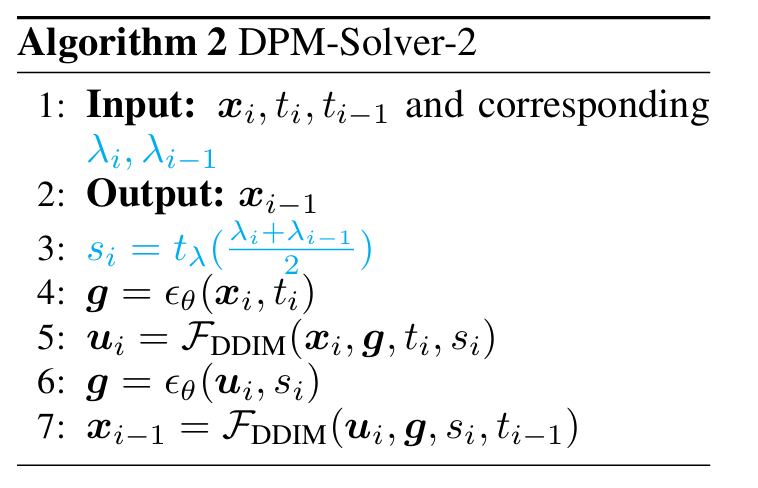 | 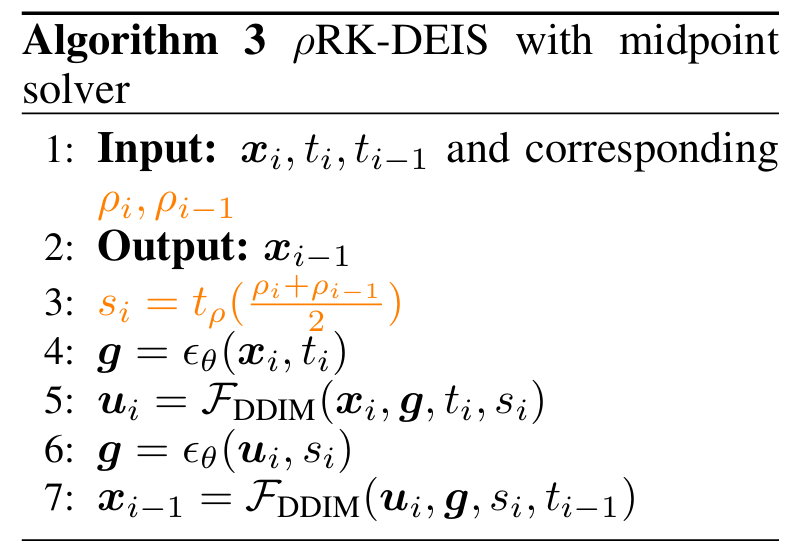 |
|---|---|
| 算法2 | 算法3 |
与Runge - Kutta的联系：尽管这两种算法都受到EI方法和Runge - Kutta的启发，但即使在扩散流ODE中不存在半线性结构时，它们实际上也是不同的。让我们考虑Karras等人（2022）中引入的方差爆炸随机微分方程（VESDE），其中$\alpha_{t}=1$，$\sigma_{t}=t$。VESDE具有简单的ODE形式：
公式（24）没有半线性结构。在这种情况下，ρRK - DEIS简化为标准的Runge - Kutta方法，对于$\Lambda$阶RK方法，其收敛阶为$O(\Delta t^{\kappa})$。DPM - Solver使用参数化$\lambda = -\log(t)$，与标准Runge - Kutta不同，并将公式（24）重新表述为：
对于$\kappa$阶DPM - Solver，在Lu等人（2022）中所述的某些假设下，其收敛阶为$O(\Delta \lambda^{\kappa})$。
实证比较：我们在64×64的类条件ImageNet上比较DPM - Solver2、DPM - Solver3、tAB - DEIS和ρRK - DEIS。我们观察到，在大多数情况下，tAB - DEIS的样本质量最佳，尤其是当NFE有限（例如为6）时。在NFE较小的区域，DPM - Solvers优于ρRK - DEIS，但随着采样步骤的增加，这种差异迅速缩小。我们假设这是因为DPM - Solvers是为在少量NFE下进行采样而设计的。然而，当NFE相对较大时，tRK - DEIS的FID略好，尽管性能差异较小。这一观察结果与我们在CIFAR10上的实验一致，三阶ρRK - DEIS在51次NFE时达到2.56的FID，而三阶DPM - Solver在48次NFE时达到2.65的FID（Lu等人，2022）。我们在图8和图9中提供了更多可视化比较。
| 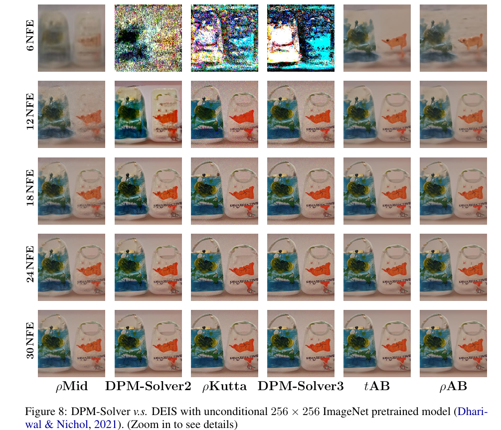 | 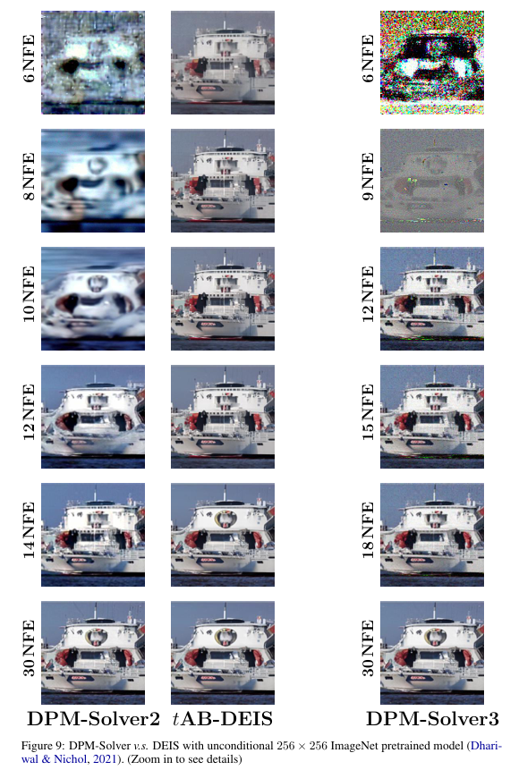 |
|---|---|
| 图8：基于无条件256×256 ImageNet预训练模型（Dhariwal和Nichol，2021年）的DPM-Solver与DEIS对比。（放大查看细节） | 图9：使用无条件256×256 ImageNet预训练模型（Dhariwal和Nichol，2021年）的DPM-Solver与DEIS对比。（放大查看细节） |
| 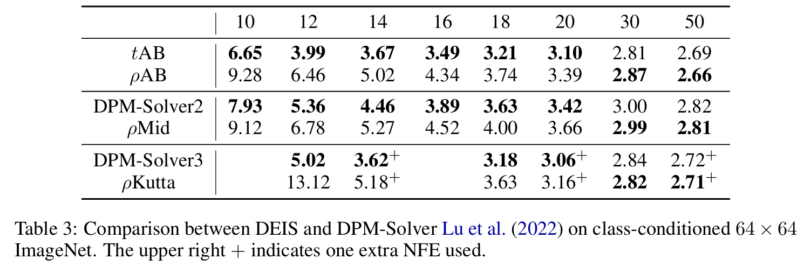 |
|---|
| 表3：DEIS与Lu等人（2022）提出的DPM-Solver在64×64类条件ImageNet数据集上的比较。右上角的“+”表示多使用了一次分数函数评估（NFE）。 |
6 问：ODE求解器对步长选择很敏感。不同的研究提出了不同的时间离散化方法（Lu等人，2022；Karras等人，2022；Song等人，2020a）。相比之下，所比较的算法和DEIS在不同的步长调度下表现如何？
答：相同时间离散化下的比较包含在附录H.3中。我们发现不同的算法可能偏好不同的时间离散化方式。我们在表2中给出了不同采样算法在其最佳时间调度下的比较。在大多数情况下，尤其是在低NFE区域，我们发现tAB - DEIS的性能优于其他方法。
7 问：DEIS能否推广用于加速扩散模型的SDE采样？
答：DEIS中开发的一些技术，如更好的分数参数化和对线性项的解析处理，可以应用于SDE的相应情况。然而，与ODE相比，SDE更难加速。我们在附录C中进行了更多讨论。
C SDE采样的离散化误差
在本节中，我们考虑求解$\lambda>0$时的随机微分方程（SDE）公式（4）的问题。如命题1所示，这也会产生一种基于扩散模型（DMs）的采样方案。公式（4）的精确解满足：
其中$\Psi$与之前相同。目标是通过离散化来近似公式（26）。有趣的是，随机DDIM（Song等人，2020a）实际上是公式（26）的一种数值求解器，证明见附录G。
命题4：对于VPSDE，随机DDIM是公式（26）的一种离散化方案。
对于一般的SDE公式（4），我们如何进行离散化呢？一种策略是沿用我们在3.2节中处理ODE（$\lambda = 0$）时的做法，用多项式来近似$\epsilon_{\theta}(\hat{x}_{\tau}, \tau)$。然而，我们发现这种策略在实际应用中效果不佳。我们认为可能有以下几个原因。在本文中，我们不再进一步研究SDE公式（4）的离散化，留待未来探讨。
- 非线性权重和离散化误差：在公式（26）中，线性项和噪声项可以精确计算，不会产生离散化误差。因此，在EI方法中，只有非线性项$\epsilon_{\theta}$会引入误差。与公式（11）相比，公式（26）中非线性项的权重更大（因为$\lambda>0$），所以更有可能导致较大的误差。从这个角度来看，$\lambda = 0$的ODE是最佳选择，因为它最小化了非线性项的权重。在Song等人（2020a）的研究中，作者也观察到确定性DDIM的性能优于随机DDIM，这一观察结果与我们的分析一致。此外，我们注意到VPSDE中的非线性权重明显小于VESDE中的非线性权重，这意味着VPSDE的离散化误差更小。实际上，从经验上看，在$N$较小时，VPSDE的采样性能要好得多。与用于ODE的公式（11）相比，公式（26）在向后模拟时会向状态中注入额外的噪声。因此，为了通过去噪生成新样本，分数模型不仅需要去除$\hat{x}_{t_{N}}$中的噪声，还需要去除注入的噪声。出于这个原因，可能需要对$\epsilon_{\theta}$进行更好的近似。
D命题1的证明
证明思路受Zhang和Chen（2021）启发。我们要证明当分数模型完美时，公式（4）所诱导的边际分布不依赖于$\lambda$的选择，且等于公式（2）所诱导的边际分布。
考虑由随机微分方程（SDE）诱导的分布$q$：
$dx = [F_tx - \frac{1 + \lambda^2}{2}G_tG_t^T\nabla \log q_t(x)]dt + \lambda G_tdw$
公式（27）从$t = T$模拟到$t = 0$。根据福克-普朗克-柯尔莫哥洛夫（Fokker - Planck - Kolmogorov，FPK）方程，$q$满足偏微分方程：
其中$\nabla$表示散度算子。由于：
我们得到：
公式（29）表明上述偏微分方程不依赖于$\lambda$。因此，公式（27）的边际分布与$\lambda$的值无关。
E命题2的证明
根据[相关内容]，基于公式（6）进行直接计算可得，对于VPSDE，$\Psi(t, s)$为：
由此可得：
令$t \leftarrow t - \Delta t$，$s \leftarrow t$，将公式（11）写为：
F命题3的证明
我们从公式（16）开始证明。在VPSDE中，公式（16）简化为：
现在我们考虑一个重新缩放的时间$\rho$，它满足以下方程：
将公式（31）代入公式（30），我们得到：
在VPSDE中，$\alpha_{t}$是关于$t$的单调递减函数。因此，基于公式（31），$\rho$和$t$之间存在双射映射，我们将其定义为$\beta$，即$\rho = \beta(t)$。此外，我们可以通过公式（31）求解$\beta$：
G命题4的证明
我们的推导采用了Song等人（2020a）中的符号。DDIM采用的更新步骤如下：
其中，$\eta$是一个超参数，且$\eta\in$ $0, 1]$。当$\eta = 0$时，公式（34）变为确定性的，简化为公式（12）。我们要证明当$\eta = \lambda$且$\Delta t\rightarrow0$时，公式（34）与公式（4）等价。由公式（34）可知，$x_{t - \Delta t}\sim N(\mu_{\eta}, \sigma_{\eta}^{2}I)$，其中：
由此可得：
并且：
因此，公式（34）的连续极限为：
当$\eta = \lambda$时，这正是公式（4）。
H更多实验细节
H.1重要技术细节和修改
- 在第3节中，通过使用高精度求解器和小步长求解ODE来近似真实解$\{\hat{x}_{t}^{*}\}$。我们通过实验发现，在VPSDE中，当步长小于$2×10^{-3}$时，RK4的解会收敛。我们使用步长为$1×10^{-3}$的RK4解来近似真实解。
- 研究发现，校正步骤和额外的去噪步骤可以在增加NFE成本的情况下提高图像质量（Song等人，2020b；Jolicoeur - Martineau等人，2021）。为了进行公平比较，除非另有说明，在本研究的所有方法和实验中，我们都禁用了校正步骤、额外的去噪步骤或其他启发式裁剪技巧。
- 由于数值问题，在采样过程中，我们将DMs中的结束时间$t_{0}$设为非零值。Song等人（2020b）建议VPSDE的$t_{0}=10^{-3}$，VESDE的$t_{0}=10^{-5}$。在实践中，我们发现$t_{0}$的值和时间调度对FID有巨大影响。这一发现并不新鲜，已有研究（Jolicoeur - Martineau等人，2021；Kim等人，2021；Song等人，2020a）已经指出了这一点。有趣的是，我们发现不同的算法对$t_{0}$和时间调度有不同的偏好。我们在表2中报告了每种方法在不同$t_{0}$和时间调度选择下的最佳FID。除非另有说明，我们使用原始论文和代码库中针对不同检查点建议的$t_{0}$，以及Song等人（2020a）建议的二次时间调度。我们在附录H.3中对$t_{0}$和时间调度进行了全面研究。
- 由于PNDM在前3步需要12次NFE，因此我们仅在NFE大于12时对PNDM进行比较。然而，我们提出的iPNDM在NFE小于12时也能工作。
- 我们在附录H.5中纳入了与A - DDIM（Bao等人，2022）的比较，使用其官方检查点和实现。
- 对于使用预训练模型（Ramesh等人，2022）的文本到图像实验，我们仅提供定性结果。
- 我们在附录H.2中提出了r阶iPNDM。除非另有说明，默认使用$r = 3$。
H.2改进的PNDM
根据公式（11），PNDM可以看作是指数积分器和基于欧拉方法的线性多步方法的组合。具体来说，它使用多个分数评估的线性组合，而不是仅使用最新的分数评估。PNDM的步骤如下：
$\hat{\epsilon}_{t}^{(3)}=\frac{1}{24}(55\epsilon_{t}-59\epsilon_{t+\Delta t}+37\epsilon_{t+2\Delta t}-9\epsilon_{t+3\Delta t})$
$\hat{x}_{t - \Delta t}=\sqrt{\frac{\alpha_{t - \Delta t}}{\alpha_{t}}}\hat{x}_{t}+[\sqrt{1 - \alpha_{t - \Delta t}}-\sqrt{\frac{\alpha_{t - \Delta t}}{\alpha_{t}}}\sqrt{1 - \alpha_{t}}]\hat{\epsilon}_{t}^{(4)}$
其中$\epsilon_{t}=\epsilon_{\theta}(\hat{x}_{t}, t)$，$\epsilon_{t+\Delta t}=\epsilon_{\theta}(\hat{x}_{t+\Delta t}, t+\Delta t)$。公式（36）中的系数是基于固定步长的黑箱ODE欧拉离散化推导出来的。同样，也存在低阶近似：
$\hat{\epsilon}_{t}^{(0)}=\epsilon_{t}$
$\hat{\epsilon}_{t}^{(1)}=\frac{3}{2}\epsilon_{t}-\frac{1}{2}\epsilon_{t+\Delta t}$
$\hat{\epsilon}_{t}^{(2)}=\frac{1}{12}(23\epsilon_{t}-16\epsilon_{t+\Delta t}+5\epsilon_{t+2\Delta t})$
最初，PNDM使用龙格 - 库塔法进行热身启动，前3步每步需要4次分数网络评估。为了减少采样中的NFE，改进的PNDM（iPNDM）使用低阶多步方法进行热身启动。我们在算法4中总结了iPNDM。我们在表4和表5中纳入了与tAB - DEIS的比较，在CIFAR10数据集上，当NFE = 50时，我们对tAB - DEIS采用均匀步长，因为我们发现其性能略优于二次步长。
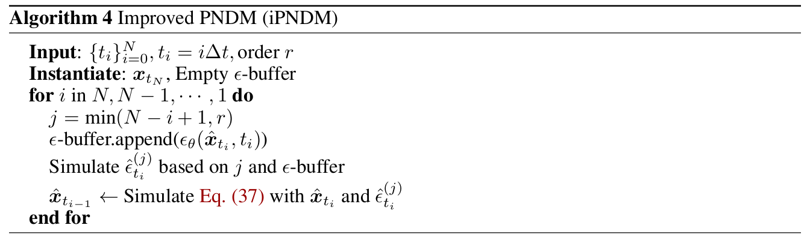
| 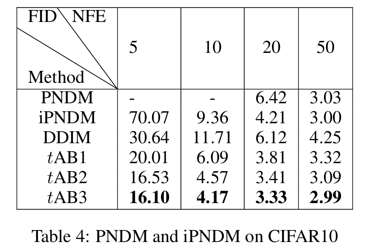 | 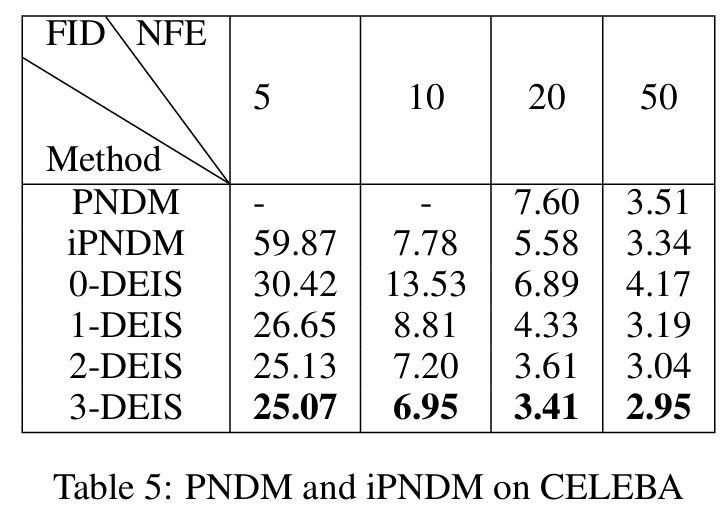 |
|---|---|
| 表4：CIFAR10数据集上的PNDM和iPNDM。 | 表5：CELEBA数据集上的PNDM和iPNDM。 |
H.3 $t_{0}$和时间调度对FID的影响
- 要素4：优化时间离散化：从图4中我们观察到，当使用均匀时间离散化时，对于所有$t_{0}≤t≤t_{N}$，近似误差并非均匀分布；随着$t$接近0，误差会增加。这一观察结果表明，为了提高精度，对于接近0的$t$，应该使用更小的步长，而不是均匀步长（线性时间步长）。一种选择是Song等人（2020a）中建议的二次时间步长，它遵循linspace$(t_{0}, \sqrt{t_{N}}, N + 1)^{2}$。
- 为了更好地理解时间离散化的影响，我们研究了具有相同边界值$\hat{x}_{T}^{}$的真实解$\hat{x}_{t}^{}$和数值解$\hat{x}_{t}$之间的差异：公式（41）表明，解$\hat{x}_{t}^{}$和$\hat{x}_{t}$之间的差异是$\Delta \epsilon_{\theta}(\tau)$的加权和。我们强调，公式（41）不仅包含我们之前讨论的$P_{r}(\tau)$的近似误差，还包含累积误差。实际上，由于$P_{r}(\tau)$是在解$\{\hat{x}_{\tau}\}$上拟合的，而不是在真实轨迹$\{\hat{x}_{\tau}^{}\}$上，因此存在由过去误差引起的累积误差。一个好的时间离散化选择应该平衡近似误差和累积误差。
- 我们有两种时间离散化的选择，自适应步长和固定时间戳。对于DMs存在一个唯一的ODE，我们通过实验发现各种ODE轨迹在曲率上具有相似的模式。并且当我们的NFE较小时，例如10甚至5，自适应步长求解器中被拒绝步骤的成本不可忽视。因此，我们在DEIS中倾向于并探索固定时间戳。我们在H.3中对几种流行的时间离散化选择（Salimans和Ho，2022；Song等人，2020a）进行了实验。令人惊讶的是，在不同的NFE预算下，我们发现各种采样器对时间步长有不同的偏好。如何以一种对称的方式设计时间离散化是一个有趣的问题，我们留待未来研究。在图5中，我们展示了我们引入的每个要素的效果。使用指数积分器时，其他要素可以在FID方面持续提高采样质量。与其他采样算法相比，DEIS具有显著的加速效果。
- 我们对基于VPSDE的不同$t_{0}$和时间调度的采样进行了研究。我们考虑了两种$t_{0}$的选择（$10^{-3}$，$10^{-4}$）和三种时间调度的选择。第一种时间调度遵循关于$t$的幂函数：
$t_{i}=(\frac{N - i}{N}t_{0}^{\frac{1}{\kappa}}+\frac{i}{N}t_{N}^{\frac{1}{\kappa}})^{\kappa}$
第二种时间调度遵循关于$\rho$的幂函数：
$\rho_{i}=(\frac{N - i}{N}\rho_{0}^{\frac{1}{\kappa}}+\frac{i}{N}\rho_{N}^{\frac{1}{\kappa}})^{\kappa}$
最后一种时间调度遵循在对数$\rho$空间中的均匀步长：
$\log \rho_{i}=\frac{N - i}{N}\log \rho_{0}+\frac{i}{N}\log \rho_{N}$
我们在表6至表8中纳入了不同$t_{0}$和时间调度之间的比较。我们注意到$t_{0}$对图像FID有巨大影响，这一点在不同的研究中也被注意到并进行了研究（Kim等人，2021；Dockhorn等人，2021）。在各种调度中，我们观察到当NFE较小时，tAB - DEIS具有明显优势，而当NFE相对较大时，ρRK - DEIS具有竞争力。
| 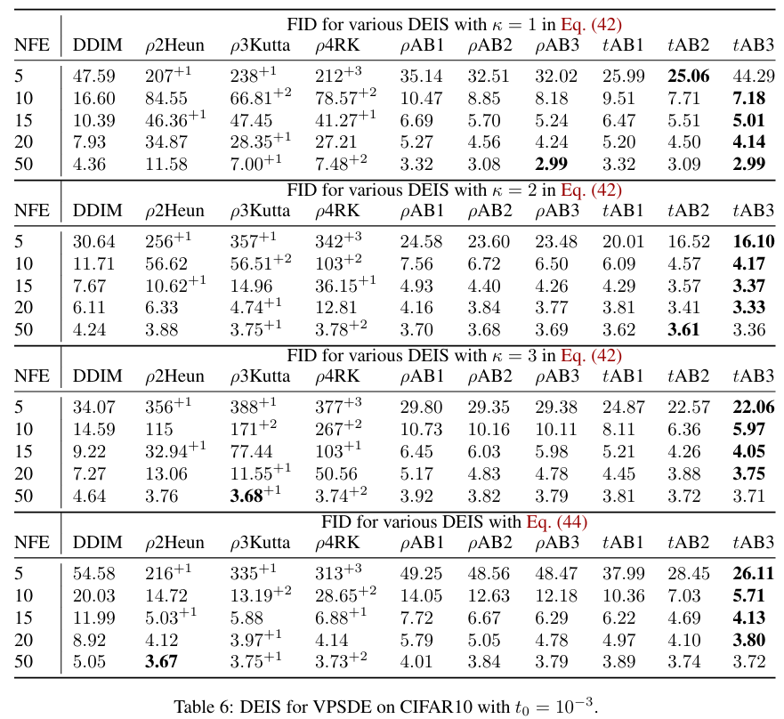 | 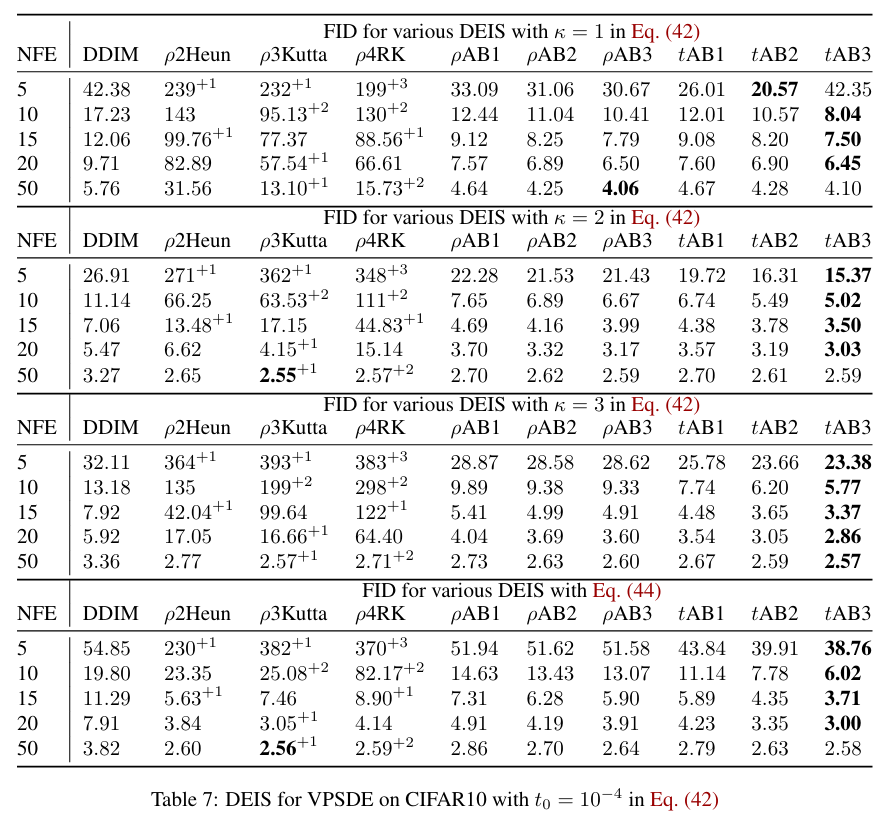 |
|---|---|
| 表6：在CIFAR10数据集上，$t_{0}=10^{-3}$时基于VPSDE的DEIS（相关结果） | 表7：在CIFAR10数据集上，当公式（42）中$t_{0}=10^{-4}$时，基于VPSDE的DEIS（相关结果）。 |
| 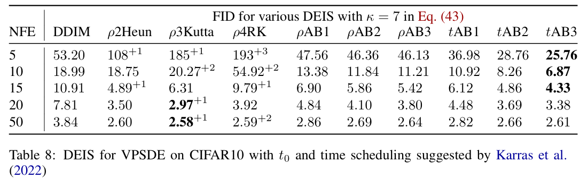 |
|---|
| 表8：在CIFAR10数据集上，采用Karras等人（2022）建议的$t_{0}$和时间调度时，基于VPSDE的DEIS（相关结果）。 |
H.4更多消融研究
我们在表9中对图5中引入的要素进行了更多定量比较。由于基于$\epsilon_{\theta}$的参数化和多项式外推这两个要素仅与指数积分器兼容，我们无法将它们与欧拉方法结合。我们还在表10中直接给出了对欧拉方法应用二次时间戳调度的性能。我们发现，小NFE和大NFE的采样对时间调度有不同的偏好。
我们还在表11中报告了VPSDE在CIFAR10数据集上使用RK45 ODE求解器的性能。作为一种流行且成熟的ODE求解器，当NFE≥50时，RK45具有不错的采样性能。然而，在有限NFE下的采样质量并不令人满意。这一结果在预期之内，因为RK45没有利用扩散模型的结构信息。当NFE较小时，RK45求解器的整体性能比iPNDM和DEIS差。
| 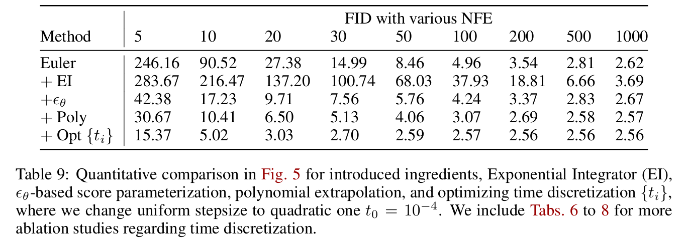 |
|---|
| 表9：图5中对所引入要素（指数积分器（EI）、基于$\epsilon_{\theta}$的分数参数化、多项式外推以及优化时间离散化$t$）的定量比较。在该比较中，我们将均匀步长改为$t_{0}=10^{-4}$的二次步长。关于时间离散化的更多消融研究结果包含在表6至表8中。 |
| 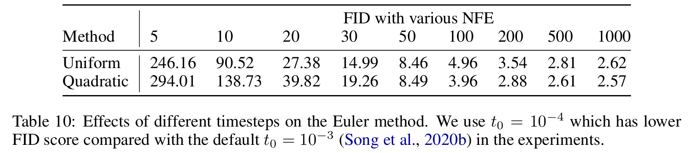 |
|---|
| 表10：不同时间步长对欧拉方法的影响。在实验中，我们使用$t_{0}=10^{-4}$，与默认的$t_{0}=10^{-3}$（Song等人，2020b）相比，该设置下的FID得分更低。 |
H.5与Analytic - DDIM（A - DDIM）（Bao等人，2022）的比较
我们还在快速采样性能方面将我们的算法与Analytic - DDIM（A - DDIM）进行了比较。在我们默认的CIFAR10检查点中，我们未能重现Bao等人（2022）中声称的显著改进。这可能有两个原因。第一，我们使用的分数网络是通过连续时间损失目标训练的，并且权重不同（Song等人，2020b）。然而，Analytic - DDIM是为具有离散时间和有限时间戳的DDPM提出的。第二，一些技巧对A - DDIM的采样质量有巨大影响。例如，A - DDIM在最后几步严重依赖裁剪值（Bao等人，2022）。当NFE较低时，如果没有适当的裁剪，A - DDIM无法提供高质量的样本。
为了与A - DDIM进行比较，我们使用Bao等人（2022）提供的检查点进行了另一项实验，并将iPNDM和DEIS集成到提供的代码库中；结果如表12所示。我们使用分段线性函数来拟合Bao等人（2022）中离散SDE的系数，以用于DEIS。在没有任何特殊技巧的情况下，即插即用的iPNDM在NFE预算较小时与A - DDIM相当，甚至略优于A - DDIM，而DEIS则比它们两者都更好。
H.6在ImageNet 32×32上的采样质量
我们使用Song等人（2021a）中提供的预训练VPSDE模型在ImageNet 32×32上进行实验。同样，我们观察到在NFE预算较低时，与DDIM和iPNDM方法相比，有显著改进。即使在NFE为50时，DEIS在采样质量方面也能够优于黑箱ODE求解器。
H.7在ImageNet 64×64和Bedroom 256×256上的实验细节
我们在类条件ImageNet 64×64和256×256 LSUN卧室实验中使用了来自guided - diffusion的流行检查点。尽管这些模型是用离散时间训练的，但我们简单地将它们视为连续扩散模型。如果我们有更好的时间离散化方案，可能会获得更好的性能。我们采用Karras等人（2022）建议的公式（43）中的时间调度，其中$\kappa = 7$，$\rho_{1}=0.002$，$\rho_{N}=80.0$，这在类条件ImageNet中给出了更好的实验性能。我们还使用了Lu等人（2022）建议的公式（44）中的时间调度，$\rho_{1}=0.002$，$\rho_{N}=80.0$。不同的时间离散化可能会获得更好的采样质量。
H.8关于VPSDE的更多结果
我们在表14中给出了CELEBA数据集的均值和标准差。
H.9关于VESDE的更多结果
虽然VESDE没有像VPSDE那样实现相同程度的加速，但与之前的VESDE方法相比，我们的方法可以显著加速VESDE的采样。我们在表15中展示了VESDE在CIFAR10上加速后的FID，并在图10中展示了采样图像。
H.10使用的检查点和代码许可
我们的代码将在未来发布。我们在Jax和PyTorch中实现了我们的方法。我们还使用了表16中多个来源的代码。
我们在表17中列出了使用的检查点和相应的实验。
I图像生成的更多结果
由于你未提供具体论文中表 11-17 的题注以及图 10-19 的题注内容，我按照格式要求，仅给出格式示例，你可以根据实际题注内容进行填充，以下是格式：
| 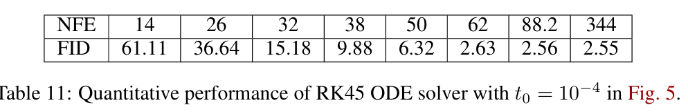 |
|---|
| 表11：图5中$t_{0}=10^{-4}$时RK45常微分方程求解器的定量性能。 |
| 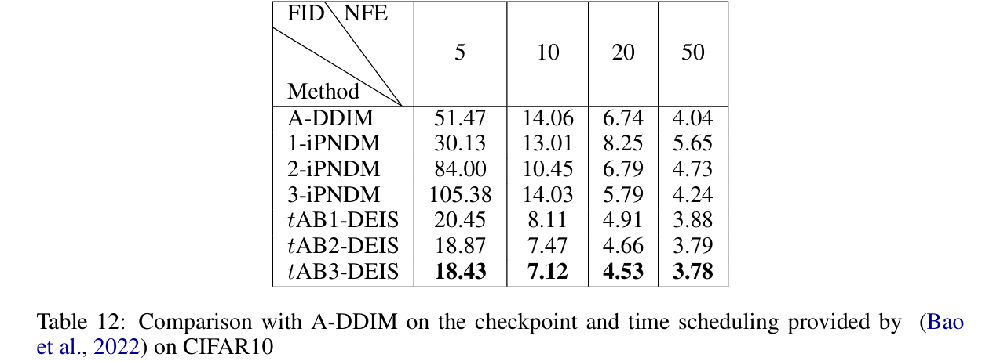 | 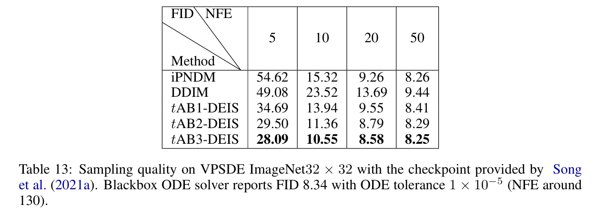 |
|---|---|
| 表12：在鲍等人（2022年）提供的检查点和时间调度下，与A-DDIM方法在CIFAR10数据集上的比较 | 表13：使用宋等人（2021a）提供的检查点，在VPSDE ImageNet32×32数据集上的采样质量。黑箱常微分方程求解器得出的FID为8.34，常微分方程容差为$1×10^{-5}$（函数评估次数约为130次） 。 |
| 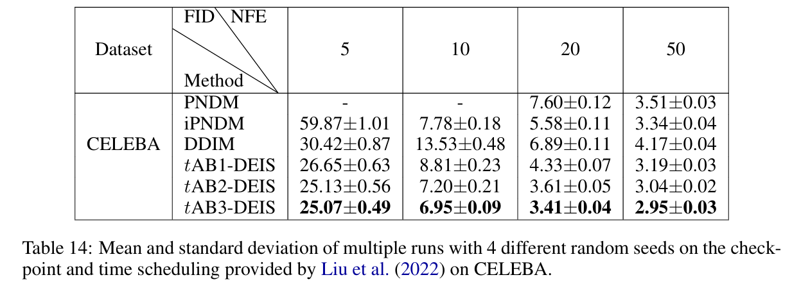 |
|---|
| 表14：在刘等人（2022年）针对CELEBA数据集所提供的检查点和时间调度上，使用4个不同随机种子进行多次运行的均值和标准差。 |
| 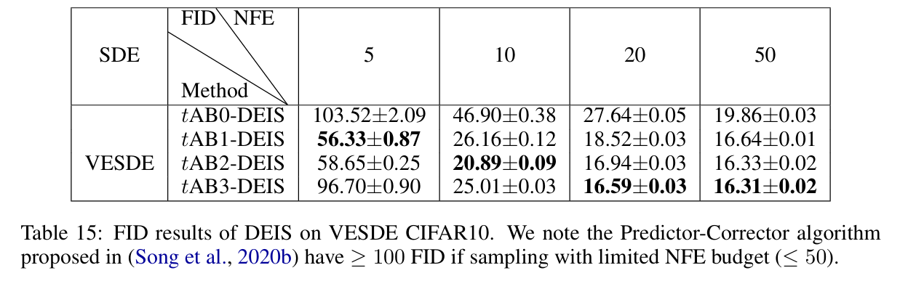 |
|---|
| 表15：在VESDE的CIFAR10数据集上DEIS的FID结果。我们注意到，在（宋等人，2020b）中提出的预测-校正算法，在采样时如果函数评估预算有限（≤50），其FID≥100。 |
| 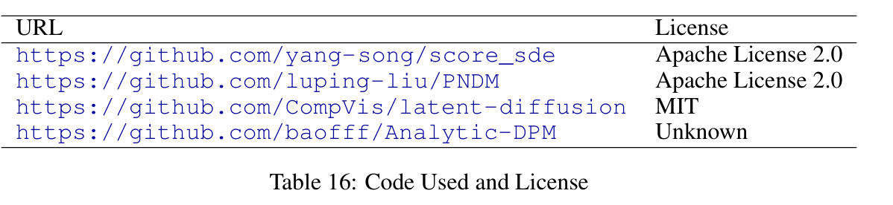 |
|---|
| 表16：所使用的代码及许可证 |
| 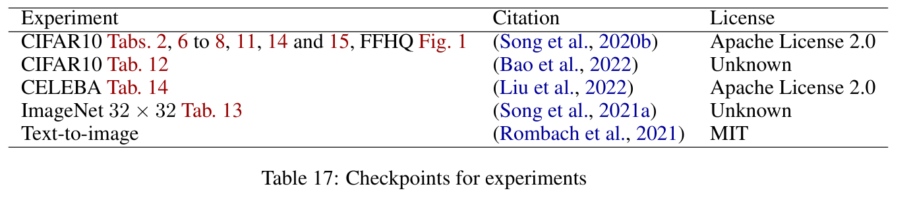 |
|---|
| 表17：实验的检查点 |
| 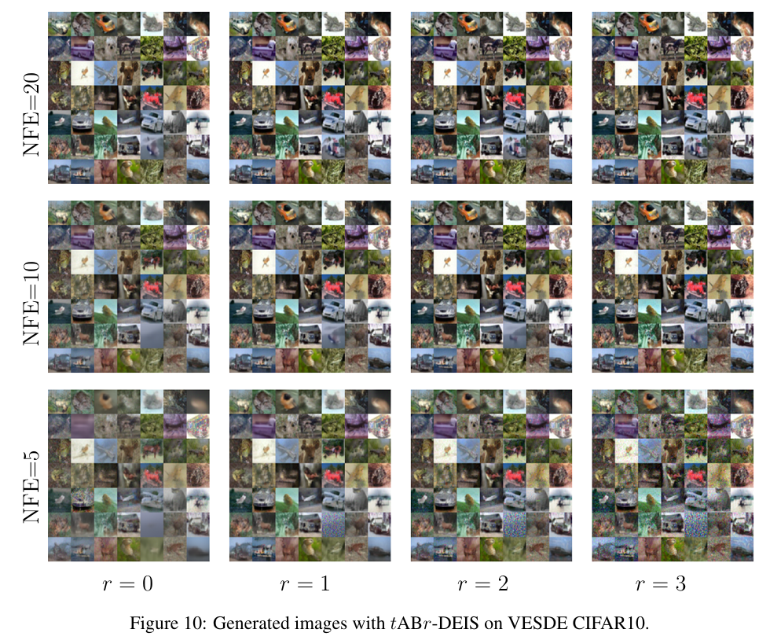 |
|---|
| 图10：使用tABr-DEIS在VESDE的CIFAR10数据集上生成的图像。 |
| 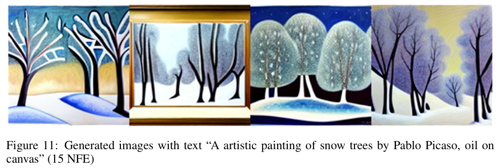 |
|---|
| 图11：使用文本“巴勃罗·毕加索创作的雪景树木的艺术画作，布面油画”（进行了15次函数评估）生成的图像 |
| 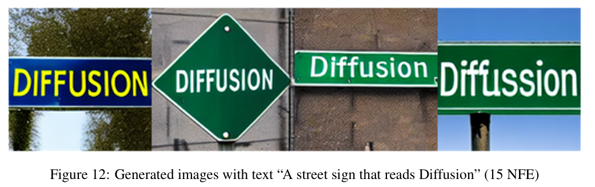 |
|---|
| 图12：使用文本“一个写着‘Diffusion’的路牌”（进行了15次函数评估）生成的图像 |
| 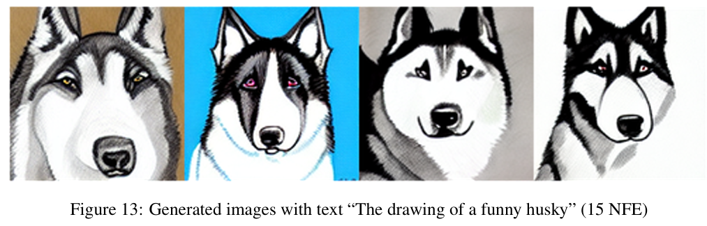 |
|---|
| 图13：使用文本“一幅有趣的哈士奇的画作”（进行了15次函数评估）生成的图像 |
| 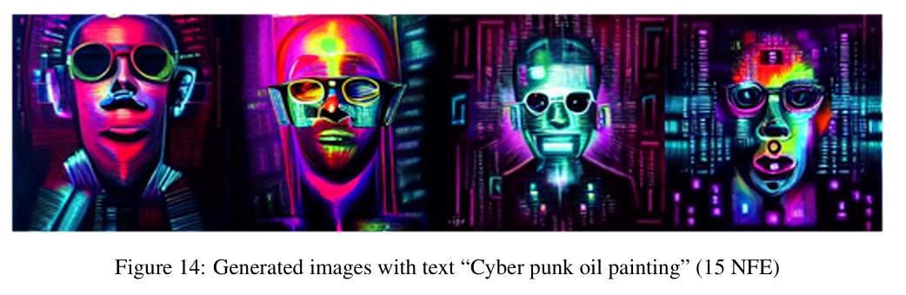 |
|---|
| 图14：使用文本“赛博朋克油画”（进行了15次函数评估）生成的图像 |
| 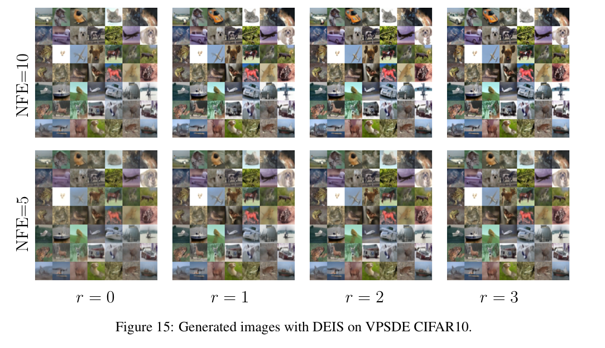 |
|---|
| 图15：使用DEIS在VPSDE的CIFAR10数据集上生成的图像。 |
| 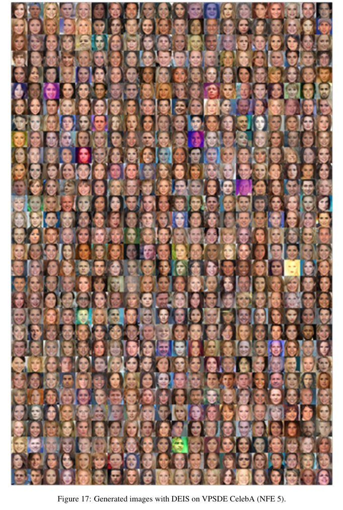 |
|---|
| 图16：使用DEIS在VPSDE的32×32 ImageNet数据集上生成的图像。 |
 |
|---|
| 图17：使用DEIS在VPSDE的名人脸数据集（CelebA）上生成的图像（函数评估次数为5次）。 |
| 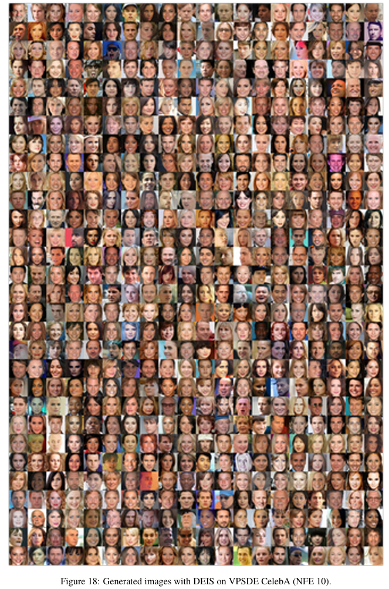 |
|---|
| 图18：使用DEIS在VPSDE的名人脸数据集（CelebA）上生成的图像（函数评估次数为10次）。 |
| 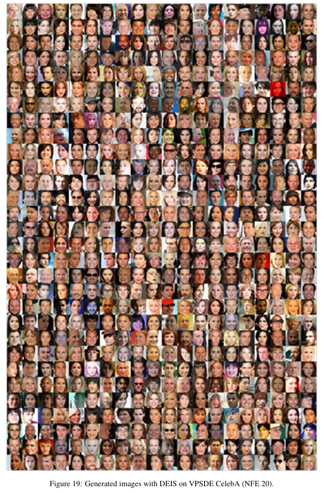 |
|---|
| 图19：使用DEIS在VPSDE的名人脸数据集（CelebA）上生成的图像（函数评估次数为20次）。 |
文章总结
这篇论文发表于2023-ICLR，主要提出扩散指数积分采样器（DEIS）。它基于为离散化常微分方程（ODE）设计的指数积分器，并利用学习到的扩散过程的半线性结构来减少离散化误差。所提出的方法可以应用于任何DM，并且能够在仅10步内生成高保真样本。